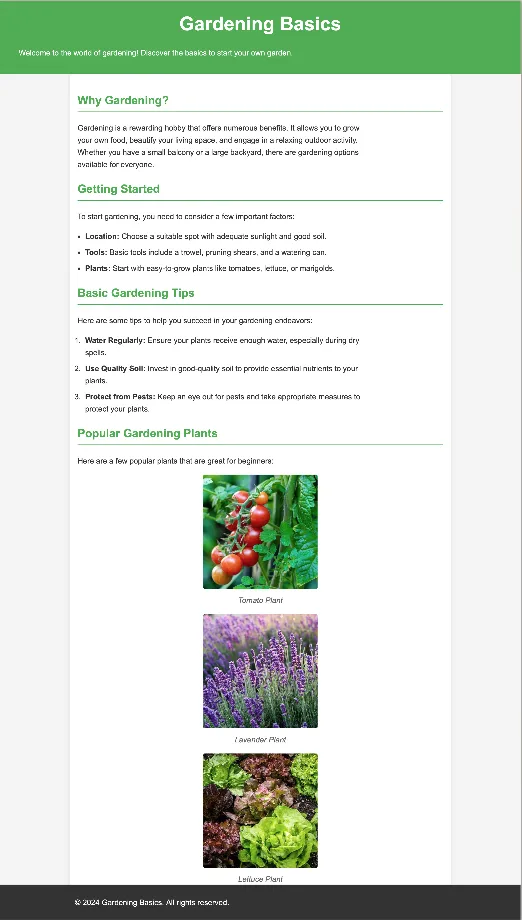

Progressive Enhancement - Ponder activities.
Preparation #
It is recommended to review Introduction to Progressive Enhancement before you start. You will need your editor open to create a couple of new files for the following code:
html #
<!-- progressive.html -->
<!DOCTYPE html>
<html lang="en">
<head>
<meta charset="UTF-8" />
<meta name="viewport" content="width=device-width, initial-scale=1.0" />
<title>Gardening Basics</title>
<link rel="stylesheet" href="style2.css" />
</head>
<body>
<header>
<h1>Gardening Basics</h1>
<p>
Welcome to the world of gardening! Discover the basics to start your own
garden.
</p>
</header>
<main>
<section>
<h2>Why Gardening?</h2>
<p>
Gardening is a rewarding hobby that offers numerous benefits. It
allows you to grow your own food, beautify your living space, and
engage in a relaxing outdoor activity. Whether you have a small
balcony or a large backyard, there are gardening options available for
everyone.
</p>
</section>
<section>
<h2>Getting Started</h2>
<p>To start gardening, you need to consider a few important factors:</p>
<ul>
<li>
<strong>Location:</strong> Choose a suitable spot with adequate
sunlight and good soil.
</li>
<li>
<strong>Tools:</strong> Basic tools include a trowel, pruning
shears, and a watering can.
</li>
<li>
<strong>Plants:</strong> Start with easy-to-grow plants like
tomatoes, lettuce, or marigolds.
</li>
</ul>
</section>
<section>
<h2>Basic Gardening Tips</h2>
<p>
Here are some tips to help you succeed in your gardening endeavors:
</p>
<ol>
<li>
<strong>Water Regularly:</strong> Ensure your plants receive enough
water, especially during dry spells.
</li>
<li>
<strong>Use Quality Soil:</strong> Invest in good-quality soil to
provide essential nutrients to your plants.
</li>
<li>
<strong>Protect from Pests:</strong> Keep an eye out for pests and
take appropriate measures to protect your plants.
</li>
</ol>
</section>
<section class="plant-section">
<h2>Popular Gardening Plants</h2>
<p>Here are a few popular plants that are great for beginners:</p>
<div class="plant-section__content">
<figure>
<img
src="https://matkat99.github.io/examples/progressive/tomato.jxl"
alt="Tomato Plant"
width="300"
/>
<figcaption>Tomato Plant</figcaption>
</figure>
<figure>
<img
src="https://matkat99.github.io/examples/progressive/lavender.jxl"
alt="Lavender Plant"
width="300"
/>
<figcaption>Lavender Plant</figcaption>
</figure>
<figure>
<img
src="https://matkat99.github.io/examples/progressive/lettuce.jxl"
alt="Lettuce Plant"
width="300"
/>
<figcaption>Lettuce Plant</figcaption>
</figure>
</div>
</section>
<!-- Contact Form Section -->
<section>
<h2>Contact Us</h2>
<form id="contact-form" class="form-container">
<label for="name">Name:</label>
<input type="text" id="name" name="name" required />
<label for="email">Email:</label>
<input type="email" id="email" name="email" required />
<button type="submit">Submit</button>
<p id="form-error" class="form-error"></p>
</form>
</section>
</main>
<footer>
<p>© 2024 Gardening Basics. All rights reserved.</p>
</footer>
</body>
</html>
These activities will be most effective if you TRY them first before you look at the solution. And after you do look at the solution...DO NOT copy and paste the code. Read through it, try to understand what it is doing...then go fix your code.
Activity 1: HTML #
Open the HTML in a browser, notice that with no styling all of the content on the page is available and can be consumed. It doesn't look great, but it is almost all there. There is one issue however, the images in the page are .jxl (JPEG XL), a next generation format. This format is more efficient than a .jpeg, but it does not have great support: caniuse. Let's begin our progressive enhancement by allowing browsers that support JPEG XL to show that version of the image, and those that don't can show a webp or normal jpeg.
- We can use the Picture element to make this happen. Review that link and return.
- Add a
pictureelement around one of the images. Change the extention on theimgelement to.jpeg. This will be our default if none of the other formats we want are supported. - Add a
sourceelement inside thepictureelement, above the existingimg. Thesourceelement should reference the.jxlversion of the image. You may need to add a type to the element as well for it to work:type="image/jxl" - Add another
sourceelement inside thepictureelement, again above the existingimg. This one should reference the.webpversion of the image. - Do the same for the other two images and check to make sure the images show now.
Solution 1
<figure>
<picture>
<source
srcset="https://matkat99.github.io/examples/progressive/tomato.jxl"
type="image/jxl" />
<source
srcset="https://matkat99.github.io/examples/progressive/tomato.webp"
type="image/webp" />
<img
src="https://matkat99.github.io/examples/progressive/tomato.jpeg"
alt="Tomato Plant"
width="300"/>
</picture>
<figcaption>Tomato Plant</figcaption>
</figure>Activity 2: Base styling #
With some simple CSS we can dramatically increase the usability of our page, without affecting browser support.
The initial enhancements we will make are:
- Body Styling: Set a background color and text color to improve readability, increase the base font size, and set a default font family.
- Header: Add background color, text color, and padding to make the header stand out.
- Headings: Use color and border to highlight headings.
- Main Content: Add padding, a maximum width, centering, and a background color with shadow to make the main content area visually appealing.
- Lists: Add padding to lists for better readability.
- Paragraphs and list items: restrict the width to no more than 70 characters.
- Images: Ensure images are responsive and visually consistent with rounded corners.
- Figures and Captions: Center images and add styling to captions for a cleaner look.
- Footer: Provide a consistent footer with background color and text alignment at the bottom of the page.
See the following screenshot to see the results, then write the styles to make it happen. You can use whatever colors and fonts you would like. Don't worry too much about exact sizes/widths. Our goal here is to improve the page incrementally to improve the user experience.
Don't worry about the form for now.

Solution 2
Your version will probably differ from this solution...and that is ok. Compare your solution with this one and ask yourself each time you see a significant difference to yours: "Why did they do that?"
body {
font-family: Arial, sans-serif;
font-size: 20px;
line-height: 1.6;
margin: 0;
padding: 0;
background-color: #f4f4f4;
color: #333;
}
header {
background-color: #4caf50;
color: white;
padding: 20px;
text-align: center;
}
h1 {
margin: 0;
font-size: 2.5em;
}
p,
li {
max-width: 70ch;
}
main {
padding: 20px;
max-width: 960px;
margin: auto;
background-color: white;
border-radius: 8px;
box-shadow: 0 0 10px rgba(0, 0, 0, 0.1);
}
h2 {
color: #4caf50;
border-bottom: 2px solid #4caf50;
padding-bottom: 5px;
}
ul,
ol {
margin: 0;
padding: 0 20px;
}
li {
margin-bottom: 10px;
}
figure {
margin: 20px 0;
text-align: center;
}
img {
max-width: 100%;
height: auto;
border-radius: 4px;
}
figcaption {
margin-top: 5px;
font-style: italic;
color: #666;
}
footer {
background-color: #333;
color: white;
text-align: center;
padding: 10px;
width: 100%;
}Activity 3: Add some Javascript #
We have had the ability to add form validation to HTML for several years now, and you can get quite a bit done with just that. However it does have limitations and so it is quite common to add additional validation to many forms using Javascript.
For example if you look at the email input in the form you will see this:
<input type="email" id="email" name="email" required />We used the HTML validation to make sure that the user typed something into the box, and we specified that it should be an email...but the browser is pretty easy to fool...as long as whatever you type in the box has an @ in it, the input will pass. It would be good to check a bit deeper to make sure that the email entered is at least structured like a valid email.
- Create a function called
submitForm. It should accept an event object as argument. - Add the following function as well to your script:
This uses a regular expression to check to make sure thatfunction validateEmail(email) {
const re = /^[^\s@]+@[^\s@]+\.[^\s@]+$/;
return re.test(email);
}emaillooks like:something@somethingelse.morestuffIt will return atrueorfalse - Add an event listener to the form. When the
submitevent happens to the form it should call thesubmitFormfunction. Console.log out a message in the submitForm function and test to make sure it fires when the button is clicked. - In the
submitFormfunction we need to get thenameandemailentered in the form. (You canquerySelectorthem directly, or you can take advantage of the fact that since the event was attached to the form...thiswill reference the form directly and you can do something like this:const emailInput = this.email. You must have aname="email"on the input in order for this to work!) - Create a variable to hold an error messages we need as well and set it equal to an empty string.
- Check to make sure that something was typed in the email input, then use the
validateEmailfunction provided earlier to test what was entered. If the input was empty set the error message, if it fails the test set the message to something else. - Check to see if there is an error message. If so then we nee dto keep the form from submitting, and we should show the message to the user.
- If there is no error message then we can submit the form normally.
Solution 3
function submitForm(event) {
const nameInput = document.querySelector("#name");
const emailInput = document.querySelector("#email");
// or could do this:
// const nameInput = this.name
// const emailInput = this.email;
console.log(this.name.value);
let error = "";
if (nameInput.value === "") {
error += "Name is required.\n";
}
if (emailInput.value === "") {
error += "Email is required.\n";
} else if (!validateEmail(email)) {
error += "Please enter a valid email address.\n";
}
if (error) {
event.preventDefault();
document.getElementById("form-error").textContent = error;
}
}
function validateEmail(email) {
var re = /^[^\s@]+@[^\s@]+\.[^\s@]+$/;
return re.test(email);
}
document.getElementById("contact-form").addEventListener("submit", submitForm);Activity 4 - More CSS #
For our final enhancement let's revisit the layout. We can use a bit of flexbox and/or Grid to dress things up a bit.
- Add a grid to
main, we will use this primarily to make sure that there is a gap between all of our sections, and possibly for some alignment. - Use flexbox for each
figureto make sure that the captions stack under the image and are centered. - Use flexbox and a media query on the
plant-section__contentto have the images stack on small screens and flow to a row on larger screens. - Add some styling for the form as well. Padding, margin, increase the size of the inputs and text, border around the form, and make the error message stand out.
Solution 4
main {
padding: 20px;
max-width: 1200px;
margin: auto;
background-color: white;
border-radius: 8px;
box-shadow: 0 0 10px rgba(0, 0, 0, 0.1);
display: grid;
gap: 20px;
}
figure {
margin: 20px 0;
text-align: center;
display: flex;
flex-direction: column;
align-items: center;
}
@media screen and (min-width: 700px) {
.plant-section__content {
display: flex;
flex-direction: row;
gap: 1em;
justify-content: space-around;
}
}
/* form styling */
.form-container {
margin-top: 20px;
padding: 20px;
border: 1px solid #ddd;
border-radius: 8px;
background-color: #fff;
}
.form-container label {
display: block;
margin-bottom: 10px;
}
.form-container input[type="text"],
.form-container input[type="email"] {
width: 100%;
padding: 8px;
margin-bottom: 10px;
border: 1px solid #ccc;
border-radius: 4px;
}
.form-container button {
background-color: #4caf50;
color: white;
border: none;
padding: 10px 15px;
border-radius: 4px;
cursor: pointer;
}
.form-container button:hover {
background-color: #45a049;
}
.form-error {
color: red;
margin-top: 10px;
}